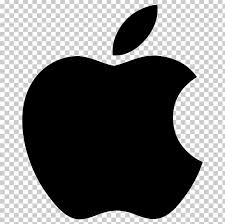

Business Level
- Hardware: iPhone, Mac, iPad, Apple Watch, AirPods
- Services: iCloud, Apple Music, Apple TV+, App Store, AppleCare
- Retail: Apple Store, online store, global distribution
PMCS-EMI Interactive Learning Webpage
Explore Apple through company history, organization, finance, project management roles, bilingual interaction, audio guide, flip cards, and quizzes.

A company built around design, hardware, software, services, and ecosystem strategy.
Team Members
Company History
Apple’s story can be understood through product vision, strategic mistakes, leadership return, and the rise of its global ecosystem.
Organizational Structure
Apple’s product execution depends on cross-functional collaboration between engineering, design, operations, marketing, finance, services, and retail.
Financial Information
Job Positions
Apple often uses EPM and TPM roles to bridge engineering, design, operations, and business needs. Tap each card to see competencies, compensation, and benefits.
Flip Cards
Engineering Program Managers connect technical teams, schedules, risks, and product execution.
Technical Program Managers coordinate technical roadmaps, stakeholders, and complex systems.
Apple’s ecosystem connects devices, software, services, and customer loyalty.
Interactive Q&A
Teamwork & Reflection
Our group focused on integration and consistency rather than only dividing tasks. We combined HR, international business strategy, finance, and computer science perspectives to build a clearer Apple case study. We reviewed the website together, tested the interactive features, and revised the content to keep it concise and easy to navigate.
AI Disclosure & Sources